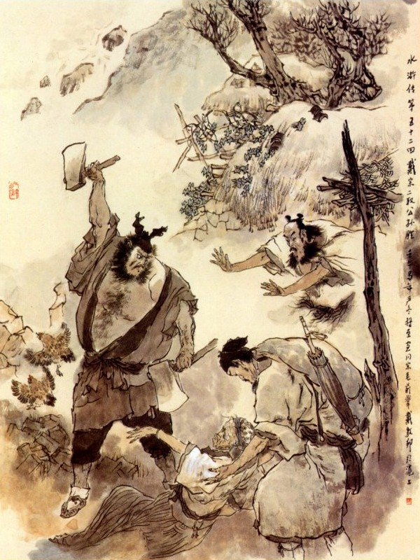
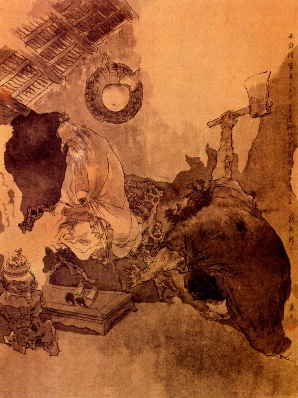

Khi đó Tống Giang nghe lời quân sư liền hỏi lại rằng:
- Quân Sư định cho tìm ai, để phá được trận của Cao Liêm bây giờ?
Ngô Dụng nói:
- Muốn phá được Cao Liêm thì tất phải cho người sang Kế Châu tìm Công Tôn Thắng Tiên Sinh mới được.
- Chuyến trước Đới Tung đi đã bao nhiêu ngày cũng không tìm thấy, phen này lại định đi tìm nữa thì biết đâu mà thăm dò cho ra?
- Ở Kế Châu có bao nhiêu huyện, tổng, xã, thôn, không tìm cho khắp thì thấy làm sao được? Vả Công Tôn Thắng là người tu hành học đạo, chắc là ở vào những nơi non cao nước rộng, hoặc các nơi động lớn chùa to, phen này phải dặn Đới Tung đi tìm khắp những chỗ ấy thì làm gì mà không tìm thấy?
Tống Giang nghe nói, liền gọi Đới Tung đến để dặn đi sang Kế Châu.
Đới Tung nói:
- Chúng tôi vâng lệnh xin đi, song xin Đầu Lĩnh cắt cho một người nữa để cùng đi mới tiện.
Ngô Dụng nói:
- Viện Trưởng dụng phép thần hành, thi ai theo kịp được mà cho người theo?
Đới Tung nói:
- Nếu có ai cùng đi thì tôi buộc giáp mã vào trái đùi rồi cũng đi nhanh được ngay.
Lý Quỳ đứng bên cạnh ứng lên rằng:
- Tôi xin đi với Viện Trưởng.
Đới Tung nói:
- Nếu bác muốn đi thì phải ăn chay như tôi mà tôi bảo cái gì phải nghe như thế mới được.
Lý Quỳ cả quyết mà rằng:
- Cái đó có khó gì, các công việc tôi xin theo cả.
Tống Giang, Ngô Dụng, dặn Lý Quỳ rằng:
- Đi đường phải nên cẩn thận, mau mau được việc rồi về, chớ có lôi thôi sinh sự mà khốn đó.
Lý Quỳ nói:
- Tôi đánh chết Ân Thiên Tích làm cho Sài Đại Quan Nhân phải bị nạn lây, có khi nào tôi không muốn cứu, phen này quyết nhiên là không sinh sự chi cả.
Nói đoạn hai người cùng giắt dao lưng, đeo khăn gói rồi từ biệt Tống Giang, cùng các Đầu Lĩnh mà lên đường thẳng lối Kế Châu. Đi được ba bốn mươi dặm đường, Lý Quỳ bỗng đứng dừng lại bảo Đới Tung rằng:
- Ca Ca mua vài chén rượu, uống rồi đi có thú không?
Đới Tung nói:
- Nếu anh muốn theo ta, để cùng làm phép thần hành thì phải ăn chay mới được.
Lý Quỳ nói:
- Thế ăn dăm ba miếng thịt cũng được chứ sao?
Đới Tung gạt đi mà rằng:
- Không được, anh lại thế thì không được, bây giờ đã sắp chiều rồi, đi mau vào tìm chỗ nghỉ trọ, để sáng mai đi sớm thôi.
Nói đoạn hai người đi được vài mươi dặm đường nữa thì trời sắp tối, liền kéo nhau vào một hàng cơm để trọ. Khi vào tới nơi, Lý Quỳ nấu cơm nước xong, mua một hai rượu, xới một thùng cơm và bưng một bát canh rau lên cho Đới Tung ăn. Đới Tung hỏi:
- Sao anh không ăn một thể?
Lý Quỳ đáp:
- Tôi chưa đói, chưa muốn ăn.
Đới Tung nghe nói, đoán chắc là Lý Quỳ lại nói dối thế, để ăn cá thịt vụng một mình, bèn ăn cơm vội cho xong rồi sẽ rón rén xuống lối sau để xem. Quả nhiên lúc ấy Lý Quỳ mua hai nai rượu, một đĩa thịt trâu mà đương ăn vội ăn vàng ở đó. Đới Tung thấy vậy trong bụng nghĩ thầm: "Biết ngay, thằng cha này còn nói dỗi mình thực. Được để ta im rồi sáng mai cho nó một mẻ, rõ cuống cuồng cho mà thích". Nghĩ đoạn thủng thẳng đi vào phòng ngủ trước. Lý Quỳ chén một lúc hết, trong bụng sợ Đới Tung biết, bèn rón rén cùng đi lên phòng để ngủ.
Đầu trống canh năm sáng hôm sau, Đới Tung dậy sớm gọi Lý Quỳ dậy sớm nấu cơm, ăn uống xong rồi, tính trả tiền hàng mà cùng nhau ra đi. Đi được vài dặm đường, Đới Tung bảo với Lý Quỳ:
- Hôm qua ta chưa dùng đến phép thần hành, ngày nay phải dùng đến phép mà đi cho mau mới được. Anh buộc khăn gói cho chặt chẽ cẩn thận, để tôi làm phép cho anh trước cứ đi tám trăm dặm rồi hãy nghỉ.
Nói đoạn lấy bốn miếng giáp mã, buộc vào hai bên trái đùi Lý Quỳ mà dặn rằng:
- Anh đến hàng rượu đâu đó mà đợi tôi nhé?
Nói xong lại đọc mấy câu thần chú, thổi lên trên chân Lý Quỳ rồi Lý Quỳ rảo cẳng bước đi, vù vù như gió vậy. Đới Tung trông theo cười nói một mình rằng:
- Hãy để cho hắn nhịn đói hôm nay đã.
Đoạn rồi lấy giáp mã buộc chân mình mà theo sau Lý Quỳ, Lý Quỳ xưa nay chưa biết thần hành là thế nào, cứ yên trí làm thế thì được nhanh chóng, khoái hoạt như Đới Tung. Dè đâu chàng vừa bước chân đi, đã thấy hai bên tai vù vù, như mưa sa gió thổi, không sao chịu. Lại thấy cửa nhà cây cối ở bên đường đều loang loáng như là biến chạy, bước chân lại bầng bầng như mây khói vùng lên thì trong bụng rất lấy làm kinh sợ. Mấy phen chàng toan dừng lại nhưng hai cẳng vẫn cứ lôi kéo bắt đi, cứ chạy hoài không sao đứng lại được. Khi trông các hàng thịt rượu cứ loang loáng biến mất, không làm thế nào vào được để ăn. Lý Quỳ thấy vạy kêu cha kêu mẹ xin dừng lại một lát, nhưng đôi chân vẫn quần quật đi luôn, không sao đứng lại cho. Chàng chạy hoài chạy mãi, đến lúc mặt trời đã vàng úa non Tây, trong bụng vừa đói vừa khát, toát cả mồ hôi, thở lên hồng hộc mà cũng không sao đứng lại được.
Bấy giờ Đới Tung ở đằng sau chạy theo gọi lên rằng:
- Lý Đại Ca! Sao không mua cái gì ăn đã?
Lý Quỳ kêu lên rằng:
- Ca Ca cứu tôi với. Thiết Ngưu đói chết rồi đây.
Đới Tung liền lấy bánh ở trong bọc ra, vừa ăn vừa để cho Lý Quỳ nom thấy.
Lý Quỳ lại kêu lên rằng:
- Tôi không làm sao đứng lại được mà mua được bánh, bác cho tôi một miếng ăn cho đỡ đói vậy.
Đới Tung chia chiếc bánh ra bảo Lý Quỳ rằng:
- Anh đứng lại đây, tôi đưa cho mà ăn.
Lý Quỳ với tay lại để lấy, chỉ cách nhau một trượng mà cũng không sao với được. Đới Tung lại kêu dội lên rằng:
- Ca Ca ơi! Hãy đứng lại một tí đã.
Lý Quỳ phát bẳn gắt lên rằng:
- Quái gở! Hai cái chân khốn nạn này không theo mình một tý nào cả, chỉ cứ cắm cổ mà chạy hoài mãi. Đừng làm ông sốt tiết lên bây giờ.
Nói đoạn cầm đôi đại phủ vỗ vào nhau chan chát để mà đe dọa. Đới Tung thấy vậy lại nói đế luôn rằng:
- Phải chặt hai cái cẳng đi, thế là tiện. Không có thì chạy đến tháng giêng sang năm cũng chưa đứng lại được đâu?
- Khổ! Ca Ca làm gì đùa thế? Chặt mất hai chân đi thì lấy gì mà chạy được nữa?
- Chắc là hôm qua anh không nghe lời tôi làm khổ cả đến tôi, không sao mà đứng lại được? Thôi, anh cứ chạy thế vậy.
Lý Quỳ quay lại bảo Đới Tung rằng:
- Bố ơi! Bố tha cho tôi đứng lại một tý.
- Phép này của tôi phải kiêng ăn mặn mà nhất là thịt trâu thì lại càng kỵ lắm.
Nếu ăn một miếng thịt trâu vào thì có lẽ chạy đến suốt đời mới ngừng lại được.
- Thế thì khổ quá! Chẳng giấu gì Ca Ca, đêm hôm qua tôi trót ăn vụng mất sáu bảy miếng thịt trâu, bấy giờ làm thế nào được?
- Thảo nào chân tôi hôm nay cũng không đứng lại được, anh Thiết Ngưu này thực làm khổ cả đến người ta.
Lý Quỳ nghe nói, kêu trời kêu đất ầm ĩ cả lên. Bấy giờ Đới Tung cười bảo Lý Quỳ rằng:
- Từ nay nếu anh nghe tôi được một việc này thì tôi có thể trừ được phép ấy ngay lập tức.
- Vâng, bố bảo điều gì, Lý Quỳ xin vâng theo cả.
- Từ đây trở đi không được ăn vụng thế nữa nghe chưa?
- Vâng, từ nay nếu có ăn vụng thì lưỡi mọc đầu đanh ra mà chết. Hôm qua vì thấy Ca Ca ăn chay đã quen tôi ăn vào khó nuốt quá, nên mới đánh liều mà ăn vụng đó thôi! Nay trở đi xin thề, không khi nào dám thế nữa.
Đới Tung nói:
- Nếu vậy thì hãy tha cho anh một chuyến đã.
Nói đoạn đi dấn đến gần lên, lấy vạt áo đập vào chân Lý Quỳ mà quát lên rằng:
- Đứng lại.
Đoạn rồi Lý Quỳ đứng ngay lập tức. Đới Tung thấy vậy bảo Lý Quỳ rằng:
- Bây giờ tôi đi trước, để anh lững thững theo gót mới được.
Lý Quỳ rằng vâng lời: Toan cất cẳng lên đi, bỗng thấy hai chân nặng chĩu như hai cây sắt, không sao mà nhúc nhích đi được. Chàng liền kêu lên rằng:
- Khổ lắm! Ca Ca lại cứu tôi một tý.
Đới Tung nghe nói, quay lại cười mà hỏi rằng:
- Vừa rồi anh thề có thực không?
- Khốn nạn! Ông là bố tôi, khi nào tôi dám nói dối nữa.
Đới Tung nói:
- Nếu quả vậy thì được rồi.
Nói đoạn dắt tay Lý Quỳ lên mà quát một tiếng "Đi!" rồi Lý Quỳ mới nhắc cẳng lên mà theo với Đới Tung. Bấy giờ Lý Quỳ bảo với Đới Tung rằng:
- Ca Ca thương Thiết Ngưu này, cho nghỉ một lát thì mới chịu được.
Đới Tung nghe nói. Liền dẫn Lý Quỳ vào một làng nào đó, để cùng nghỉ với nhau. Đới Tung cởi giáp mã ra, hóa vàng lễ tạ rồi hỏi Lý Quỳ rằng:
- Bây giờ thế nào?
Lý Quỳ sờ đến chân rồi thở dài mà rằng:
- Hai cái chân này giờ mới là của tôi đây.
Nói đoạn Đới Tung bảo Lý Quỳ làm cơm chay ăn rồi cùng nhau đi nghỉ.
Sáng hôm sau vào khoảng đầu trống canh năm, hai người dậy sớm, cơm nước xong hai người cùng đi. Đi được ba dặm Đới Tung lấy giáp mã bảo với Lý Quỳ rằng:
- Hôm nay tôi buộc hai miếng cho anh thong thả vậy.
Lý Quỳ nói:
- Thôi bố đừng buộc cho con nữa.
- Được, anh cứ thuận lời tôi nói thì cứ buộc vào để đi cho chóng. Nếu anh không nghe thì lại cho anh đứng nguyên như hôm qua rồi bao giờ tôi tìm được Công Tôn Thắng về đây, sẽ tha cho anh mà đi.
Lý Quỳ nghe nói, vội kêu lên rằng:
- Bố buộc vào đây, buộc vào đây, tôi không dám nói gì nữa.
Đới Tung liền buộc cho mỗi người hai miếng giáp mã làm phép thần hành rồi hai người cùng đi với nhau. Từ đó trong khi đi đường Lý Quỳ nhất nhất theo lời Đới Tung mà không dám trái. Một hôm đi đến địa phận Kế Châu, hai người cùng đến hàng cơm ở ngoài thành để trọ rồi sáng hôm sau vào thành sớm để tìm hỏi Công Tôn Thắng. Hôm đó Đới Tung giả làm ông chủ, Lý Quỳ giả làm người đầy tớ theo hầu vào thành suốt một ngày trời, không có tin tức gì, hai người lại phải trở về nhà trọ. Ngày hôm sau lại vào thành, tìm khắp cả các hang cùng ngõ hẻm cũng không thấy tăm hơi đâu cả, Lý Quỳ lấy làm sốt ruột nói với Đới Tung rằng:
- Lão ăn mày này, không biết rằng trốn ở chỗ nào? Bây giờ đi tìm thấy thì nắm cổ lôi ngay về cho Ca Ca mới được.
Đới Tung nghe nói, nguýt Lý Quỳ mà rằng:
- Anh lại giở quẻ rồi, muốn như hôm nọ hay sao?
Lý Quỳ cười toét mồm đáp rằng:
- Không, không tôi nói đùa ấy chứ.
Đới Tung lại hầm hầm ra dáng giận dữ, Lý Quỳ phải im thít, không dám nói câu gì nữa. Hôm đó hai người về nghỉ hàng trọ rồi đến ngày thứ ba lại đi hỏi thăm ở các thị trấn xung quanh không một ai biết đến. Đến trưa hôm ấy, hai người đã đói, liền tìm vào một hàng cơm, thấy hàng quán đông, không có chỗ ngồi, hai người còn ở ngoài đường, sẽ lại hỏi dò mọi người xem có biết, khách hàng còn giở ăn uống và cũng không ai biết đến Công Tôn, sau lại ngồi gần bàn của một ông già Đới Tung vội thi lễ mà gọi cơm và thức ăn chay. Đới Tung nói:
- Ta chỉ dùng ít cơm thôi, còn người cứ dùng cho đủ.
Lý Quỳ nói:
- Phải ăn cho đủ no mời được, tôi xin ứng tiền ra.
Tên tửu bảo đi qua thấy liền cười. Ai ngờ đợi mãi không thấy cơm nước gì. Lý Quỳ đã thấy mọi người ăn xong ra đi, trong lòng đã bực bội, lại thấy họ đem cơm lên cho ông già cùng ngồi một bàn với mình, ông già ấy chẳng nhường cho hai người, cứ việc cúi xuống mà ăn, Lý Quỳ tính nóng, bèn chửi mắng nhà hàng rằng:
- Đồ khốn nạn! Làm cho lão đây đợi đến bao giờ mà không đem hàng ra bán.
Liền vỗ bàn mạnh lên làm cho cơm nước đổ ra bàn, khiến lão kia đương ăn bực mình, nắm lấy Lý Quỳ mà mắng:
- Sao ngươi làm đổ cơm nước của ta là nghĩa lý gì?
Lý Quỳ cũng toan giơ tay cự lại. Đới Tung ngăn vội mà rằng:
- Ngươi không được thế? Xin ông già hãy nể mặt tôi xin đền tiền cơm nước cho ông, đừng lôi thôi gì nữa, thằng đầy tớ của tôi không biết lễ phép thế nào, vậy xin lỗi cụ.
Người già kia nói:
- Khách quan không rõ cho tôi, tôi tới đây đường xa, cần ăn cơm sớm, để tôi đi nghe giảng đạo, thế này lại chậm lỡ thôi.
Đới Tung nghe vậy liền hỏi:
- Thưa cụ là người ở đâu, đến đây nghe ai giảng đạo?
Ông già nói:
- Tôi người ở huyện Cửu Cung, thuộc Tô Châu, vốn ở núi Nhị Tiền, nay vào trong thành để mua dầu hương, mang về trên núi, nghe La Chân Nhân giảng phép trường sinh bất tử.
Đới Tung liền nghĩ ngay: "Có lẽ Công Tôn Thắng cũng ở trong đám này chăng?” Liền thừa dịp hỏi ngay ông lão:
- Thưa cụ ở trong quý trang có vị nào là Công Tôn Thắng đạo nhân chăng?
Ông già nói:
- Nếu khách quan mà hỏi mọi người thì không ai biết đến ông ta, chỉ tôi đây với ông ta vốn là hàng xóm, ông ta đi vân du luôn, có bà mẹ ở nhà, nếu hỏi là Công Tôn Thắng là tên tục, không ai nhận được ra, phải gọi là Nhất Thanh Đạo Nhân mới tìm tới được.
Đới Tung nói:
- Chính chúng tôi đây đương muốn gặp ông ta, tìm đến chết người mà chả gặp, may thay gặp cụ xin cụ chỉ giúp cho chúng tôi được tới nhà.
Liền đứng vái ông cụ mà hỏi:
- Thưa cụ từ đây tới núi Nhị Tiên bao nhiêu đường đất và Nhất Thanh Đạo Nhân có ở nhà không?
Ông già nói:
- Núi Nhị Tiên cách huyện Cửu Cung chừng ngoài bốn mươi dặm đường, còn Nhất Thanh Đạo Nhân là bậc cao đồ của La Chân Nhân, không lúc rời ở bên cạnh.
Đới Tung nghe nói cả mừng, liền gọi hàng dọn cơm nước mau lên rồi cùng ông già và Lý Quỳ cùng ăn uống, xong rồi tính trả tiền hàng, cùng ra khỏi điếm, ông già mời Đới Tung cùng đi một thể.
Đới Tung nói:
- Xin mời cụ đi trước, chúng tôi còn mua vàng hương cho đủ lễ đã.
Rồi cùng nhau bái biệt, Đới Tung trở vào nhà hàng lấy hành lý rồi buộc giáp mã vào chân mình và chân Lý Quỳ, hai người dùng phép thần hành, chốc lát đã tới huyện Cửu Cung mới làm phép dừng lại.
Khi đó Đới Tung hỏi thăm đường về núi Nhị Tiên, có người mách cho từ huyện này đi tới năm dặm về phía Đông thì tới núi đó. Đới Tung lại cùng Lý Quỳ đi tới đó, chỉ chừng năm dặm tới núi Nhị Tiên. Đới Tung gặp một tiêu phu bèn thi lễ mà hỏi thăm nhà Nhấ Thanh Đạo Nhân? Tiều phu chỉ cho biết:
- Đi tới mỏm núi kia, qua cái cầu đá là đến nhà ông ta.
Đới Tung liền cảm ơn xong, hai người lại lần đến đó, thấy có mươi túp nhà tranh, ngoài xung quanh tường thấp lè tè, trước có cầu đá con con rồi thấy một người đàn bà cầm thúng quả ở trong đi ra. Đới Tung chấy tay vái chào, hỏi người đàn bà ấy rằng:
- Nàng ở trong nhà Nhất Thanh Đạo Nhân đi ra, chẳng hay có Đạo Nhân ở nhà hay không?
- Có, Đạo Nhân đương luyện phép ở trong đó.
Đới Tung mừng rỡ bảo Lý Quỳ rằng:
- Anh đứng nấp ở đây, đợi tôi vào xem đã rồi anh sẽ vào sau.
Nói đoạn quay đi vào trước. Khi vào thấy có một dẫy ba gian nhà lá, trước cửa treo cái rèm bằng cỏ lau. Đới Tung bèn đằng hắng một cái rất to rồi có một bà da mồi tóc bạc ở trong nhà chạy ra, chàng liền vái chào hỏi rằng:
- Bẩm cụ chúng tôi muốn vào hầu Thanh Đạo Nhân một lát.
Bà cụ hỏi:
- Ngài là ai? Ở đâu đến đây?
- Bẩm, chúng tôi là Đới Tung ở Sơn Đông mới đến.
- Cháu nó đi chơi vắng chưa về.
- Dạ! Thưa cụ: Chúng con là anh em bạn cũ, muốn cần hỏi việc gấp, xin cụ làm ơn bảo cho.
- Hiện có không có ở nhà. Ngài cần chuyện gì, cứ dặn tôi cũng được. Khi nào nó về, ngài sẽ đến chơi.
Đới Tung nghe nói, vội đáp rằng:
- Nếu vậy xin để khi khác tôi sẽ đến.
Nói xong vái chào đi ra, bảo với Lý Quỳ rằng:
- Bây giờ phải cần đến anh mới được. Vừa rồi bà mẹ ông ta chối là đi vắng, vậy để anh vào hỏi lần nữa, nếu bà ta còn chối thì đánh luôn, nhưng chớ đánh đau, lúc nào tôi vào thì thôi ngay mới được.
Lý Quỳ vâng lời, mở khăn gói lấy song phủ dắt ở sau lưng rồi đi thẳng vào cửa mà quát to lên rằng:
- Ai đó. ra đây?
Bà cụ nghe tiếng hỏi "Ai" rồi vội chạy ra, trông thấy Lý Quỳ trợn mắt tròn xoe lên thì trong bụng lấy làm sợ hãi, liền hỏi rằng:
- Ca Ca có việc gì đó?
Lý Quỳ nói:
- Ta là Hắc Toàn Phong ở Lương Sơn Bạc, vâng tướng lệnh của Tiều, Tống Ca Ca đến đón Công Tôn Thắng. Nếu đem hắn ra đây thì tử tế, bằng không thì ta cho mồi lửa đốt phăng nhà đi bây giờ?
Nói xong lại thét lên rằng:
- Mau mau ra đây.
Bà cụ nói:
- Hảo hán ôi! Nhà tôi đây là Nhất Thanh Đạo Nhân, chứ không phải nhà Công Tôn Thắng đâu?
- Cứ gọi hắn ra đây, ta nhận mặt khắc biết.
- Hắn đi chơi vắng nhà chưa về.
Lý Quỳ nghe đến đó, rút phăng đôi phủ ra, chém một nhát đổ hẳn một bên tường rồi hằm hằm ra mặt giận dữ. Bà cụ vội chạy đến ôm giữ Lý Quỳ lại.
Lý Quỳ quát lên rằng:
- Nếu không bảo con trai ra đây thì ta chém chết bây giờ.

Nói đoạn giơ búa chém luôn làm cho bà cụ kinh sợ ngã lăn ra đó. Bấy giờ Công Tôn Thắng ở trong nhà chạy ra kêu lên rằng:
- Không được vô lễ như thế.
Đoạn rồi thấy Đới Tung ở ngoài thét mắng rằng:
- Thiết Ngưa sao được xấc láo làm cho bà cụ kinh sợ như vậy?
Nói đoạn Đới Tung vội vàng nâng bà cụ dậy rồi Lý Quỳ vất đôi song phủ xuống, vái chào Công Tôn Thắng mà rằng:
- Xin Ca Ca tha lỗi, không làm thế thì bao giờ Ca Ca chịu ra?
Công Tôn Thắng vội vàng nâng mẹ dậy, vái chào hai người rồi mời vào trong nhà, Công Tôn Thắng hỏi:
- Sao ngài lại tìm được đến đây?
Đới Tung nói:
- Chuyến trước tôi đã đi đến Kế Châu tìm khắp mọi nơi không thấy Ca Ca ở đâu, sau rủ được mấy người nhập bọn cùng về trên núi. Chuyến này Tống Công Minh tới Đường Châu cứu Sài Đại Quan Nhân, chẳng may bị Tri Phủ Cao Liêm dùng phép yêu ma đánh luôn mấy trận, không sao mà chống lại được. Nhân vậy phải cho tiểu đề cùng Lý Quỳ đi mời Ca Ca, về để bàn kế giúp cho. Tiểu đệ tới Kế Châu thăm hỏi mấy ngày không được, sau may vào hàng bánh, gặp một ông già chỉ bảo giùm cho, bấy giờ mới biết đường mà lần hỏi đến đây. Khi tới cổng đã gặp một người đàn bà đi ra, chúng tôi hỏi thăm đã biết chắc là Ca Ca ở nhà. Ai ngờ vào tới nơi cụ lại nói dối là đi vắng, nhân thế phải lập kế cho Lý Quỳ vào hỏi, như vậy thực vô lễ, xin Ca Ca tha lỗi cho Tống Công Minh, hiện nay ở đất Cao Đường, một ngày dài tựa ba thu, vậy Ca Ca sắp sửa đi ngay cho chóng xong công việc.
Công Tôn Thắng nói:
- Tôi từ thủa trôi nổi giang hồ, trong lòng thực vẫn mộ các tay hảo hán. Duy từ khi ở Lương Sơn Bạc về đây, một là mẹ già đầu bạc, không ai nuôi nấng trông coi; hai là La Chân Nhân cũng có lòng yêu mến, không cho đi đâu, lại e các vị hảo hán ở Lương Sơn Bạc đến đây tìm hỏi, nhân thế bắt tôi phải đổi tên là Nhất Thanh Đạo Nhân mà giữ riết ở nhà, không còn ai biết đến được nữa.
- Ngày nay Tống Công Minh, đương khi nguy cấp, vậy xin Ca Ca lấy lượng từ bi mà đến đó một phen rồi sẽ liệu.
- Bây giờ tôi không thể nào mà đi được, vì có mẹ già phải trông coi khuya sớm và La Chân Nhân cũng không chịu cho đi.
Đới Tung đứng dậy cúi lạy Công Tôn Thắng; mà nhất tâm cầu khẩn xin đi, Công Tôn Thắng đỡ dậy mà rằng:
- Nếu vậy để tôi định liệu xem sao?
Nói đoạn giữ Đới Tung và Lý Quỳ ở đó rồi làm cơm chay thiết đãi hai người. Khi ăn uống xong, Đới Tung lại vật nài nói với Công Tôn Thắng rằng:
- Nếu Ca Ca không chịu đi thì Tống Công Minh tất bị Cao Liêm bắt được mà đại nghĩa ở Lương Sơn Bạc từ nay tất là đổ vỡ cả.
- Để tôi bẩm với Sư phụ Chân Nhân, nếu người có bằng lòng thì sẽ đi một thể.
- Xin Ca Ca đi hỏi ngay bây giờ cho.
- Hãy thư thả, nghỉ đây một đêm, để sáng mai đi hỏi cũng được.
- Bây giờ Tống Công Minh ở Đường Châu mong mỏi từng giờ từng phút, vậy xin Ca Ca đi hỏi giúp ngay cho?
Công Tôn Thắng thấy lời lẽ ân cần, không sao cầm lòng được, bèn dẫn cả Đới Tung, Lý Quỳ, cùng lên trên núi Nhị Tiên. Bấy giờ đương dạo cuối thu sang đông, ngày ngắn đêm dài, ba người đi được một quãng thì mặt trời đã tà tà xế tối. Công Tôn Thắng dẫn hai người đếm một ngỏ nhỏ, đến quán La Chân Nhân, thấy có cái biển son đê ba chữ "Chân Nhân quán" rất to. Ba người vào đến đình sửa áo, liền cùng nhau chỉnh đốn áo khăn rồi đi qua một lũy hành lang đến hiên Tùng Hạc. Khi đó có hai tên tiểu đồng, thấy Công Tôn Thắng đến, vội vào báo cho Chân Nhân biết. Chân Nhân nghe báo, truyền chỉ cho Công Tôn Thắng vào, Công Tôn Thắng dẫn Đới Tung, Lý Quỳ vào đến trong hiên Tùng Hạc, thấy La Chân Nhân đương ngồi ngay ngắn ở trên sập Vàng, Công Tôn Thắng vội vái chào rồi đứng ra một bên. Đới Tung thấy vậy cũng vội vàng cúi xuống lạy chào, còn Lý Quỳ vẫn đứng im mà đưa mắt nhìn trân trân không chớp. Chân Nhân hỏi Công Tôn Thắng rằng:
- Hai vị này là ai?
Công Tôn Thắng nói:
- Chính là bọn nghĩa hữu ở Sơn Đông ngày trước, đề tử đã nói đến, hiện nay vì Tri Phủ Cao Đường khoe khoang phép lạ nên Tống Giang huynh mới sai hai anh em đến triệu đệ tử đi. Vậy đệ tử đến đây xin phép sư phụ người có cho đi được chăng?
Chân Nhân nói:
- Nhất Thanh đã thoát nơi Lò Lửa, yên tâm theo luyện phép trường sinh, sao còn mơ hồ đến cảnh đó?
Đới Tung cúi lạy thưa rằng:
- Người rộng phép cho Công Tôn Tiên Sinh xuống núi một phen, sau khi đã phá được Cao Liêm sẽ đưa về núi hầu người.
La Chân Nhân nói:
- Hai người chưa rõ, những việc ấy không phải là đám xuất gia tôi bận đến, vậy xin các ngài hãy về thương nghị xem sao?
Công Tôn Thắng bất đắc dĩ phải vâng lời dẫn hai người ra về. Bấy giờ Lý Quỳ mới hỏi riêng rằng:
- Vừa rồi lão gia nói gì thế?
Đới Tung đáp:
- Anh lại không nghe rõ hay sao?
- Tiếng nói thế, ai còn nghe ra cái gì?
- Đấy là sư phụ ông ta không cho đi đấy.
Lý Quỳ nghe nói, tức giận mà kêu lên rằng:
- Mình đi bao nhiêu đường đất khổ sở biết bao? Bây giờ tìm thấy rồi, lại hoạch họe mãi. Đừng làm ông sốt ruột lên thì gọi là xé tan cái mũ ấy ra rồi nắm thắt lưng kéo cổ thằng già ấy xuống núi cho mà xem.
Đới Tung thấy vậy, nguýt Lý Quỳ mà rằng:
- Anh lại muốn đóng đinh chân xuống đây rồi.
Lý Quỳ vội làm mặt tươi cười mà rằng:
- Không, không, tôi nói đùa đấy chứ.
Đêm hôm ấy hai người về tới nhà, Công Tôn Thắng sai dọn cơm ăn. Công Tôn Thắng cùng Đới Tung ăn uống như thường, duy Lý Quỳ cứ ngồi nghĩ ngây người mà không ăn uống chi cả. Công Tôn Thắng bảo với hai người rằng:
- Hãy dằn lòng nghỉ đây một tối, sáng mai tôi đến nói lại xem, nếu có cho đi thì hay lắm.
Đới Tung đành phải cất dọn hành lý rồi cùng với Lý Quỳ, cùng ngủ một nơi. Lý Quỳ nằm trằn trọc không sao ngủ được. Đến sáng canh tư thì chàng ngồi nhổm dậy, nghe thấy Đới Tung ngủ ngáy khò khò như chết, chàng liền nghĩ thầm trong bụng rằng: "Thằng cha nó. vô lý quá! Nó là người ở Lương Sơn về đây, lại còn phải hỏi sư phụ nào! Mình định cho phắt nó một búa là xong, nhưng giết nó thì lấy ai cứu Ca Ca cho được?” Đoạn rồi lại nghĩ: "Nếu sáng mai mà lão già lại không chịu cho đi thì có phải là lỡ cả việc của Ca Ca không? Thế này thì không thể nào mà nhịn được! Bất nhược giết phăng thằng già kia, cho nó hết hỏi là tất nhiên phải đi với mình hẳn".
Chàng nghĩ đến đó, liền sờ đến đôi phủ, khẽ mở cửa phòng, lần bóng trăng trong mà đi lên Tử Hư. Khi tới nơi, thấy cửa đóng kín mít, lại hai bên tường thấy lè tè, chàng liền nhảy tót vào trong, sẽ mở cửa ra rồi lần mò vào trong hiên Tùng Hạc. Chàng đi đến trước hiên, nghe trong cửa có tiếng người tụng kinh, bèn nhảy lên chỗ khe cửa để xem thì thấy La Chân Nhân ngồi ở chỗ lúc chiều, trên án trước mặt có lò lửa hương khói bốc lên nghi ngút và hai cây nến thắp sáng choang. Lý Quỳ nói một mình: "Thằng cha này số chết đây", rồi lần đến bên cửa sẽ lấy tay đẩy tung cánh cửa ra, đoạn rồi lấy búa sấn vào, nhè giữa óc La Chân Nhân choang cho một búa; ngã gục xuống giường.
Lý Quỳ nom kỹ thấy máu trắng chảy ra, bèn cười mà nói rằng:
- Thằng cha này luyện tài thực làm thế nào mà nguyên khí hãy còn nguyên.

Chàng cũng nom đến cái mũ cũng vỡ ra làm đôi mà trên đầu thì toác một nhát thẳng xuống dưới cổ.
Chàng lại nói:
- Giết được thằng cha này, tất là Công Tôn Thắng phải theo chúng mình hẳn.
Nói đoạn toan quay về. Chợt đâu một tên Thanh Y Đạo Đồng chạy đến ôm lấy Lý Quỳ mà rằng:
- Anh giết thầy tôi, bây giờ chực chạy đi đâu?
Lý Quỳ giơ búa lên mà quát rằng:
- Thằng ranh con này, ông cho một búa nhân thể.
Nói đoạn chém một nhát chết quay ra đó rồi cười nói một mình rằng:
- Bây giờ còn đứa nào ra đây nữa không? Thôi ta đi về.
Miệng nói chân đi chạy thẳng một mạch về nhà Công Tôn Thắng, tới nơi lẻn vào thấy Đới Tung vẫn còn ngủ im thim thít, chàng lại đóng cửa rồi vào nằm tử tế. Sáng hôm sau dậy sớm, Công Tôn Thắng sai dọn cơm cùng ăn, cơm nước xong Đới Tung lại thúc giục Công Tôn Thắng lên núi để xin phép, Lý Quỳ thấy vậy chỉ bầm bụng cười thầm mà không dám nói. Đoạn rồi Công Tôn Thắng đưa hai người cùng đến quán Tử Hư.
Khi vào tới Tùng Hạc, có hai tên đạo đồng đứng ở đó. Công Tôn Thắng liền hỏi:
- Chân Nhân ngồi ở đâu?
Đạo đồng đáp:
- Chân Nhân đương ngồi ở trên Vân Sàng đó.
Lý Quỳ nghe nói cả kinh, lè lưỡi ra đến nửa ngày không co vào được. Bấy giờ ba người cùng mở rèm đi vào, quả nhiên thấy La Chân Nhân đương ngồi trên Vân Sàng ở giữa nhà. Lý Quỳ thấy vậy nghĩ thầm rằng: "Có lẽ đêm qua mình giết nhầm chắc", vừa nghĩ xong thấy Chân Nhân hỏi:
- Ba các ngươi đến đây làm gì?
Đới Tung nói:
- Chúng tôi đến kêu với sư phụ mở lòng từ bi cứu cho khỏi nạn, chúng tôi được đội ơn đức muôn vàn.
La Chân Nhân hỏi:
- Người đen lớn kia là ai thế?
Đới Tung bẩm:
- Hắn là nghĩa đệ của tôi tên là Lý Quỳ.
Chân Nhân cười nói:
- Đáng lẽ không cho Công Tôn Thắng đi, nhưng nể mặt Lý Quỳ, nên cho anh ta đi một phen.
Đới Tung lạy tạ rồi lại nói chuyện với Lý Quỳ. Lý Quỳ nghe nói, nghĩ thầm trong bụng: "Anh này biết mình định giết nên mới thế đây”.
Chân Nhân lại nói:
- Ta làm phép cho ba người đến ngay Đường Châu bây giờ.
Đới Tung vâng lời tạ ơn rồi tự nghĩ rằng: "La Chân Nhân lại có phép đi nhanh hơn phép thần hành của ta hẳn?” Chân Nhân gọi đạo đồng, lấy ba cái khăn tay đến. Đới Tung nói với Chân Nhân rằng:
- Bẩm sư phụ làm thế nào cho chúng tôi tới ngay được Đường Châu?
Chân Nhân đứng dậy bảo ba người rằng:
- Các ngươi đi ra đây với ta.
Ba người vâng lời theo Chân Nhân ra chỗ mỏm đá bảo Công Tôn Thắng đứng chụm hai chân lên trên rồi Chân Nhân lấy tay áo phẩy một cái mà quát lên rằng:
- Lên.
Bỗng dưng cái khăn hóa ra một vầng mây đỏ, đem Công Tôn Thắng lên cao ước chừng hai mươi trượng, Chân Nhân lại quát lên "Im" thì thấy đám mây đứng im lại mà không đi nữa. Chân Nhân lại lấy khăn tay xanh, bảo Đới Tung trèo lên rồi quát một tiếng "Lên" thì khăn tay xanh hóa ra đám mây xanh mà đưa Đới Tung lên cao bằng chỗ Công Tôn Thắng mà đang lơ lửng ở đó. Lý Quỳ nom thấy vậy, ngây hẳn người ra, như thằng dại vậy. Bấy giờ Chân Nhân lại bảo lấy khăn tay trắng, bảo Lý Quỳ đứng lên. Lý Quỳ nói:
- Đừng làm đùa thế, lỡ ngã một cái thì quăn da.
Chân Nhân nói:
- Anh nom hai người kia có ngã không?
Lý Quỳ liền đứng vào cái khăn tay. Chân Nhân quát lên một tiếng "Lên" rồi khăn tay trắng hóa thành đám mây trắng đem quân bay lên, Lý Quỳ kêu lên:
- Ái. Ái. Không chịu được, cho xuống mau.
Chân Nhân vẫy tay một cái, hai đám mây xanh, đỏ đều là là bay xuống. Đới Tung lạy tạ Chân Nhân, đứng hầu về bên hữu, còn Công Tôn Thắng đứng hầu về bên tả. Bấy giờ còn một mình Lý Quỳ ở trên mây trắng kêu lên rằng:
- Trời ôi! Tôi muốn đái bây giờ. Mau mau cho xuống, không có thì đái cả vào đầu bây giờ.
La Chân Nhân đứng dưới hỏi lên rằng:
- Chúng ta là bọn tu hành có can phạm gì đến ngươi? Sao đêm hôm qua ngươi dám cào tường vào, giơ búa chém ta? Nếu ta không phải là người có đạo đức thì còn sống làm sao được nữa? Ngươi lại giết cả đạo đồng của ta nữa là nghĩa lý gì?
Lý Quỳ nói:
- Không phải tôi! Có lẽ ông lầm rồi.
La Chân Nhân cười rằng:
- Thôi cũng chỉ chém hai cái túm cỏ của ta đó thôi. Nhưng bụng ngươi đã bất thiện thì ta phải cho một mẻ mà sửa đổi đi mới được.
Nói đoạn giơ tay vẫy, quát lên một tiếng "Đi" rồi thấy một trận ác phong đưa đến thổi bạt Lý Quỳ đi lên tít trên mây. Đoạn rồi có hai người lực sĩ khăn vàng dong áp hai bên. Bấy giờ Lý Quỳ chỉ nghe thấy hai bên tai vù vù như gió táp mưa sa, trông xuống bên dưới cỏ cây cửa nhà đều ầm ầm bay chuyển. Dưới chân mình cũng chẳng khác nào gió giục mây vần, càng ngày càng đổi giạt mãi đi, không biết trời đất là đâu nữa. Lý Quỳ trông thấy sợ hãi rụng rời, chân tay dẫy lên đây đẩy. Chợt đâu nghe một tiếng huỵch thật mạnh, chàng nhắm mắt nhìn kỹ thì rơi ngay xuống nóc nhà công đường phủ Kế Châu rồi lăn thồ lồ xuống đất. Khi đó quan Phủ Mã Sĩ đương ngồi trong công đường, nha lại đứng hầu cả hai bên, thấy bỗng có người ở trên nóc nhà lăn xuống thì ai nấy đều kinh sợ không hiểu ra sao cả. Quan Phủ bèn thét lính trói lại rồi bắt dong đến trước cửa công đường ma quát lên rằng:
- Thằng này mày là yêu quái ở đâu mà lại rơi xuống đó?
Lý Quỳ đương đau đớn, vỡ cả đầu sứt cả mặt, thở hồng hộc, không sao mà trả lời được. Tri Phủ lại quát:
- Thằng này tất là yêu quái ở đâu, bây lấy nước phép ra đây.
Mấy tên lính ngục vâng lời, đem Lý Quỳ mà trói lại, đưa ra chỗ bãi cỏ trước cửa công đường rồi một tên ngu hầu bưng chậu huyết cho và một người bưng thùng nước giải dội từ đầu Lý Quỳ xuống. Lý Quỳ thấy mình mẩy mặt mũi, toàn nhơ bẩn cả lên, bèn kêu rằng:
- Tôi không phải là yêu ma nào đâu. Tôi là người nhà La Chân Nhân đây.
Nguyên La Chân Nhân vốn có tiếng đạo đức ở đất Kế Châu, quanh vùng đó, ai cũng gọi là ông thần tiên sống, nhân thế nên không ai động đến Lý Quỳ nữa. Đoạn rồi chúng lại dẫn Lý Quỳ vào công đường mà kêu lên rằng:
- La Chân Nhân là một người có tiếng là thần tiên sống ở đất Kế Châu. Vậy quả người này là người nhà La Chân Nhân thì không nên trị tội làm chi.
Tri Phủ cười rằng:
- Ta đọc hàng nghìn vạn cuốn sách, nghe hết chuyện xưa nay, chưa từng nghe thấy ông thần tiên nào lại có người đồ đệ như thế này bao giờ. Thằng này chắc là yêu quái, chúng đem đánh đi ta xem.
Chúng vâng lệnh phải đem Lý Quỳ ra đánh lấy đánh để, chỉ còn thiếu một nước chết là xong. Tri Phủ quát lên rằng:
- Nếu thú nhận là yêu quái thì ta tha cho.
Lý Quỳ phải bất đắc dĩ mà xưng tên Lý Nhị. Tri Phủ liền sai đóng gông nặng mà giam xuống nhà lao tử tù. Khi xuống ngục, Lý Quỳ nói rằng:
- Ta nay bị nhật thần xung khắc, sao lại gông ta thế này? Ta truyền cho cả phủ Kế Châu là chết hết đó?
Mấy anh Áp lao Tiết Cấp và bọn lính ngục vẫn sợ tiếng La Chân Nhân xưa nay, vội vàng đến hỏi Lý Quỳ rằng:
- Bác là người ở đâu? Cứ nói thực cho chúng tôi biết.
Lý Quỳ nói:
- Ta là người thân của La Chân Nhân, nên đem ta đến bỏ chốn này, đây ải vài hôm rồi thế nào cũng đón ta về. Nếu các anh không đem rượu thịt cho ta ăn uống tử tế thì ta cho toàn gia các anh chết cả đó. Bọn kia nghe nói, anh nào cũng sợ hãi, phải mua rượu thịt đến cho ăn uống. Lý Quỳ thấy chúng sợ hãi lại càng làm già lên, cho chúng sợ hãi, cho chúng sợ thêm, phải đem nước nóng đến cho chàng tắm rửa.
Lý Quỳ bảo chúng rằng:
- Nếu không cho ăn uống hẳn hoi thì ta cứ bay đi ngay, để các anh khổ cho mà coi.
Bọn lính ngục thấy vậy, lại càng kính sợ, đem nước nóng cho Lý Quỳ tắm gội rồi lấy quần áo sạch sẽ cho thay rồi anh nào anh nấy, phục dịch bằng ông thần sống vậy.
Nói về La Chân Nhân từ khi sai ngọn gió đưa Lý Quỳ đi rồi, liền đem chuyện trước nói cho Đới Tung biết, Đới Tung kinh sợ, vội vàng kêu xin tha thứ cho Lý Quỳ. Đoạn rồi La Chân Nhân giữ Đới Tung ở đó mà hỏi thăm mọi công việc của sơn trại. Đới Tung đem tấm lòng trọng nghĩa khinh tài, cùng các đức hay tính tốt của Tiều Thiên Vương và Tống Công Minh thuật cho Chân Nhân nghe. Chân Nhân nghe nói, vẫn điềm nhiên như không rồi lưu Đới Tung ở đó luôn năm hôm nữa. Trong mấy hôm đó, ngày nào Đới Tung cũng lạy van kêu nài với La Chân Nhân để xin cứu cho Lý Quỳ trở về, La Chân Nhân cười mà đáp rằng:
- Hạng người ấy thì trừ phắt nó đi, còn mang về làm gì nữa.
Đới Tung nói:
- Lý Quỳ tuy tính thô mãng không biết lễ phép, xong bụng dạ trực tiết, bình sinh không hề tham nhũng của ai, không hề siểm nịnh ai, dẫu chết tấm lòng không đổi. Nhất sinh chưa từng có một chút manh tâm đến sự tài lợi dâm đãng, nên việc gì cũng hăng hái dám làm, bởi thế nên Tống Công Minh lấy làm yêu quý vô cùng. Nay nếu mất người ấy thì chúng tôi không thể nào về với Tống Công Minh được nữa?
La Chân Nhân cười rằng:
- Tôi nói thế mà thôi. tôi vẫn biết là một vị Sát Tinh ở trên trời, vì hạ giới hiện nay tội ác đã nhiều, nên trời đày anh ta xuống để giết bớt những giống loài vô ích, tôi đây có khi nào lại trái lòng trời mà giết hắn đi cho được, đó chẳng qua là rèn bớt tính khí cho hắn rồi tôi lại cho về đây ngay, có ngại gì?
Nói đoạn gọi lên rằng:
- Nào lực sĩ đâu?
Nói vừa dứt lời thì trước hiên Tùng Hạc có một ngọn gió bay qua rồi có một lực sĩ khăn Vàng chạy vào, cúi lạy La Chân Nhân mà vâng pháp chỉ. Chân Nhân truyền rằng:
- Hôm nọ ta sai ngươi đem đày tên ấy sang Kế Châu, nay đã hết tội lỗi rồi, vậy ngươi đến đó bắt về đây cho ta.
Lực sĩ vâng lời quay ra. Được một lát bỗng thấy Lý Quỳ ở trên trời rơi xuống ở giữa sân. Đới Tung vội vàng ra đỡ Lý Quỳ mà hỏi rằng:
- Mấy hôm nay anh em ở đâu thế?
Lý Quỳ trông thấy La Chân Nhân thì chỉ cúi đầu lạy lấy lạy để mà kêu lên rằng:
- Trăm lay gia gia, ngàn lại gia gia, từ nay Thiết Ngưa không dám thế nữa.
La Chân Nhân ung dung nói rằng:
- Ngươi từ nay trở đi phải bỏ hết tính xằng mà hết lòng phò tá Tống Công Minh thì ta tha cho.
Lý Quỳ nói:
- Người là cha mẹ bên trên, khi nào con cái dám sai lời nữa.
Đới Tung lại hỏi thăm chuyện trong mấy hôm đó. Lý Quỳ liền thuật lại chuyện vào ngục Kế Châu, đến khi có Hoàng Cân Lực Sĩ cứu về, cho Đới Tung nghe.
Bấy giờ Công Tôn Thắng nói với hai người rằng:
- Ở đây có hơn một ngàn Hoàng Cân Lực Sĩ đó đều là đầy tớ La Chân Nhân cả.
Lý Quỳ nghe nói kêu lên rằng:
- Ối Phật Tổ ôi! Thế mà không bảo cho tôi biết trước, để tôi khỏi xằng như thế?
Nói đoạn lạy lấy lạy để không thôi. Đới Tung cũng năn nỉ kêu với La Chân Nhân rằng:
- Chúng tôi đến đây đã lâu mà quân mã Đăng Châu hiện đương nguy cấp, dám xin sư phụ mở lượng từ bi mà cho Công Tôn Thắng cùng đi cứu Tống Công Minh, để phá Cao Liêm một phen rồi lại xin đưa lên hầu ngài lập tức.
La Chân Nhân nói:
- Lẽ ra không cho đi, nhưng nghĩ đến đại nghĩa của các ngươi thì xin cho đi mấy hôm để giúp. Duy ta dặn câu này phải nhớ chớ quên mới được.
Công Tôn Thắng vội vàng quỳ xuống để nghe pháp chỉ xem sao?
Mới hay:
Cuộc đời bể lại dám qua,
Xưa nay nghĩa lớn vẫn là nghĩa chung,
Người Thánh triết kẻ hào hùng.
Đặt thân tuy khác, giữ lòng dễ sai.
Cùng nhau tế độ lấy đời,
Gây nên hạnh phúc cho nòi giống xưa,
Can qua dù sự chằng ngờ,
Gan vàng dạ sắt trơ trơ mới là.
Lời bàn của Thánh Thán
Hồi này toàn đem chuyện quái lạ viết ra văn, trong truyện có một dạng bút mực khác, song ở độc giả, phải nên lược qua chuyện quái lạ mà đoán ra ý tứ. Tại sao? Vì quái lạ vốn ác đạo của văn chương, truyện này cũng có nói ra, chẳng phải là không thoát tục mà có tác dụng vậy cũng có ý tứ khác người đó vậy. Vì trong truyện đã có một Công Tôn Thắng, chẳng thề không có một Cao Liêm, sinh nẩy ra lấy một Cao Liêm, để phản thấn lại Công Tôn Thắng. Nay chẳng vì lúc này phép thuật gớm ghê mà tả ra một phen đấu phép hay sao? Song le phép thuật gớm ghê vốn là khó vậy, nếu chẳng phô trương Cao Liêm thì không thể phô trương Công Tôn Thắng, khoe khoang hai người đấu phép tranh kỳ, đủ mọi phép mầu sinh ra quỷ thần cầm thú. chẳng còn thiếu cái gì thì như truyện Tây Du và mọi sách không khác, đó là Thi Nại Am đối với nghĩa chẳng làm sao được.
Ta nghe nhà văn, từng có những phép bỏ thực cầu hư, ở đây lược tả Cao Liêm, tường thuật Công Tôn, ý giả dụng phép này chẳng? Song nghiệp dĩ đã lược tả Cao Liêm, tường thuật Công Tôn thì sao chẳng lược tả cả Công Tôn mà tường thuật đến thầy của Công Tôn, tức bảo là bỏ thực cầu hư đó vậy. Lại thêm chuyện Lý Quỳ diệt quái đã lạ, để nảy ra một bậc chân nhân, nảy ra Chân Nhân, chính là để nảy ra Công Tôn Thắng vậy, nếu chẳng biết ý tứ tác giả như thế mà vội chê Lý Quỳ đối sĩ bệnh không thể chữa, ta cũng không biết nói thế nào?
Hồi này một đoạn tả ra chỗ vỗ bàn đổ bánh, để đi đến những đoạn văn sau, đều do tác giả thổ hết tâm can mới được như thế, không nên coi thường mà đọc qua loa.